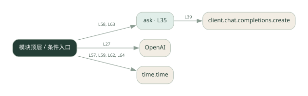

1-15 · 全课程第 15 节
请求缓存
caching.py
源码快照 b15e70098bb2 · 静态解析 · 2026-09-10
01 / 要完成的事
相同请求再次出现时优先返回已保存的响应。
02 / 为什么要做
重复询问若每次调用模型，会重复付费和等待。
03 / 当前代码状态
存在外部服务或模型依赖；执行前需按源文件配置依赖和凭据，可能联网或产生 API 费用。 本次只做静态解析，没有运行练习，也没有替你填写或修改原代码。
04 / 调用图
打开大图 ↗实线：源码中的直接调用；虚线：函数引用/注册、动态调用或按方法名推断的候选。L 是调用所在源码行号。箭头不表示执行顺序或每次必经；分支、循环、异步调度及框架内部调用需结合源码。灰色是外部/未解析目标，橙色是动态分发；省略 print、len 和常规容器操作以减少干扰。孤立函数可能尚未接入。

先从 模块入口 出发，沿箭头找到本文件函数，再查看外部调用或动态分发。右侧调用清单保留所有静态调用点，能回到原文件逐行对照。
05 / 函数定位
| 函数 / 定义行 | 职责（源码注释） | 内部调用 |
|---|---|---|
askL35 | 带结果缓存的提问：相同问题直接复用 | client.chat.completions.create |
这样做的优点
命中时速度快、减少调用费用。
代价与局限
缓存键需要考虑模型、提示词与用户；内存缓存重启即丢失，过期策略另需设计。
适用场景
重复率高、答案变化慢的只读问答。
不宜直接照搬
实时行情或不能混用不同用户答案的业务。
动手检验理解
连续问两次，再改一个字符，观察是否命中及耗时差异。
有未实现位置时先预测，再补齐验证。能启动不等于逻辑正确。
查看全部 17 个静态调用 / 引用点
| 调用方 | 目标 | 源码行 | 类型 |
|---|---|---|---|
| <模块入口> | OpenAI | 27 | 调用 |
| ask | client.chat.completions.create | 39 | 调用 |
| <模块入口> | print | 52 | 调用 |
| <模块入口> | print | 53 | 调用 |
| <模块入口> | print | 54 | 调用 |
| <模块入口> | print | 56 | 调用 |
| <模块入口> | time.time | 57 | 调用 |
| <模块入口> | print | 58 | 调用 |
| <模块入口> | ask | 58 | 调用 |
| <模块入口> | print | 59 | 调用 |
| <模块入口> | time.time | 59 | 调用 |
| <模块入口> | print | 61 | 调用 |
| <模块入口> | time.time | 62 | 调用 |
| <模块入口> | print | 63 | 调用 |
| <模块入口> | ask | 63 | 调用 |
| <模块入口> | print | 64 | 调用 |
| <模块入口> | time.time | 64 | 调用 |